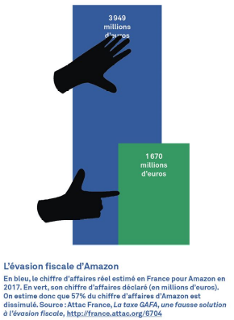

Amazon serial fraudeur fiscal
(Retrouvez les 30 bonnes raisons de stopper Amazon)
Evasion fiscale à grande échelle
57% du chiffre d’affaires d’Amazon réalisé en France est dissimulé dans les paradis fiscaux, notamment au Luxembourg (>voir ici). Amazon déclare artificiellement ses profits dans les paradis fiscaux.
C’est la filiale luxembourgeoise qui fait payer le droit d’utiliser la marque aux autres filiales dans les autres pays européens.
Pour l’évasion fiscale, Amazon pratique les "prix de transfert" : facturation des filiales par la maison-mère au Delaware (paradis fiscal) afin de réduire les résultats dans les pays concernés, via le Luxembourg (paradis fiscal)
- Amazon se facture ses propres services (via sa filiale luxembourgeoise) pour diminuer ses propres résultats sur le sol français.
Cette évasion fiscale permet à Amazon
- de faire encore plus de bénéfices,
- de ne pas payer ses impôts, et donc de profiter gratuitement des infrastructures publiques payées par les contribuables,
- de renforcer sa compétitivité au détriment de ses concurrents.
En minorant ses bénéfices, Amazon peut justifier les contrats précaires de ses salariés. La multinationale a aussi utilisé ce prétexte pour répercuter la taxe GAFA sur ses vendeurs.
Amazon, c’est + de 2,5 milliards d’€ évadés vers les paradis fiscaux chaque année.
Pour la Commission européenne, près des ¾ des bénéfices d’Amazon en Europe ne sont pas imposés.
Et Amazon bénéficie:
- du CICE : 5,6 millions d’euros en 2017 (pour 8,2 millions d’€ payés)
- de crédits d’impôts de 240 millions d’€ du Luxembourg chaque année.
En 2017, le CICE touché par sa filiale française, Amazon Logistique, représentait 5,6 millions d’€, alors que ses impôts s’élevaient à 8,2 millions d’€.
Amazon missionne régulièrement des cabinets de lobbying pour l’aider à influencer la législation en sa faveur. En Europe, Amazon dépense chaque année entre 100 000 et 150 000 € pour obstruer toute avancée législative sur l’encadrement et le traitement des données personnelles, et près de 2 millions d’€ au total en 2017.
Fraude massive à la TVA
98 % des vendeurs étrangers sur Amazon.fr contrôlés par Bercy fraudaient la TVA en 2019. Des chercheurs américains ont démontré qu’Amazon a volontairement organisé un système de fraude massive à la TVA et à la contrefaçon sur ses sites à travers le monde (voir ici).
Un grand nombre de vendeurs "européens" ne le sont pas : ils ont en réalité obtenu une immatriculation européenne de TVA via Chypre qui les délivre facilement (en plus d’être un paradis fiscal). Ces vendeurs (dont des sociétés écran) – en grande partie de Chine - peuvent ainsi continuer à frauder la TVA et Amazon n’est pas tenue de payer à leur place (voir ici).
Non seulement la multinationale est dans une santé financière excellente, mais en plus la fraude à la TVA de ses vendeurs et son propre évitement de l’impôt sur les sociétés ont asséché les finances publiques de plus d’1 milliard d’€ en 2020 (4 à 5 milliards d’€ pour l’ensemble du e-commerce).
« Amazon doit payer ses impôts ! »
La taxe GAFA instaurée en France à grands renforts de communication est symbolique et ne concerne qu’une partie de l’activité des entreprises concernées.
Pour ATTAC, la mise en place de la taxation unitaire et du reporting pays par pays permettrait d’imposer efficacement Amazon et à la France d’augmenter ses recettes fiscales auprès de l’entreprise à hauteur de 70 %.
Il faut aussi qu’Amazon cesse de bénéficier d’exonérations fiscales – comme sur la taxe sur les surfaces commerciales (TASCOM) – et donc de concurrence déloyale.
A lire :
- "Amazon, Cdiscount, eBay, Wish… Fraude massive à la TVA sur les places de marché des acteurs du e-commerce" (note ATTAC, décembre 2019).
- "Impunité fiscale, sociale et environnementale : immersion dans le modèle Amazon" (rapport Attac-France, Les Amis de la Terre, Solidaires, 24/11/2019)